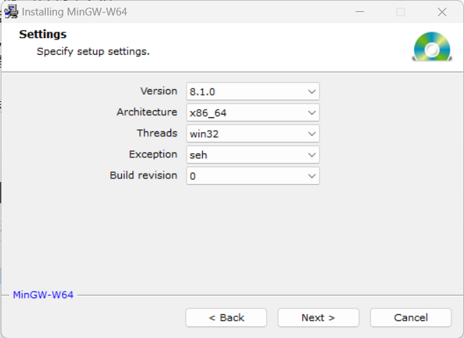

vscode配置cmake和gdb调试C/C++项目程序
开始学习C++
实习让我熟悉了python语言，但是在处理底层源码的时候，总是囿于自己有限的C/C++能力，看不懂代码，就不能深入到底层学习，况且无论怎么样，python程序总是不能有高效的运行，除了深度学习，也找不出第二个它特别适合的应用场景了。（转码也需要了解C++）综上所述，开始学习之。
按我的使用习惯，用惯了vscode再想换其他的编辑器实在有些困难，不如就在vscode上完成这一切吧，于是需要解决的一个重要问题就是，如何使用命令行与vscode自己debugger，对一个较大的C工程文件进行联调，经过一天的摸索，总算实现了。
配置gdb和vscode进行命令行调试
gdb是经典的C/C++调试器，vscode有着美观的断点和调试界面，二者合二为一可以兼得其优点，以便于进行优雅地debug。完成这一切，需要首先安装必需的插件和软件。
前置文件安装
- 安装MinGW组件：MinGW是为windows系统定制的gcc，g++以及make组件，方便用户在windows系统上完成对C项目的构建与调试，安装可以参考如下链接，建议下载在线下载器（直接下载可执行文件的，可能版本过于老旧，会出现一些难以预测的Bug，不建议），然后各项选择如下图所示：

记住当前安装路径，然后开始下载安装、最后配置环境变量。
注意，windows系统下的make程序名字不叫make.exe而是mingw32-make.exe，可以将该程序复制一份并重命名为make.exe，然后，在命令行中输入以下命令：
1 | gcc --version |
当输出为各个软件的版本号时，说明gcc，g++编译器和gdb调试器的安装已经完成。
- 安装cmake：当构建的项目文件较大时，单靠gcc和g++手工编译已经非常麻烦，不利于项目的管理，此时应当通过cmake构建Makefiles，使用make完成项目的编译，cmake的下载与安装可以参考这个官方链接：https://cmake.org/download/，安装基本是傻瓜式安装，自行配置即可，安装完毕后配置环境变量，然后验证安装：
1 | cmake --version |
输出正常版本号即证明安装完成，注意配置cmake使用当前已安装的编译器MinGW-w64。
- 在vscode中，只需要安装插件
C/C++（Microsoft认证）和CMake（作者是twxs）即可。
配置vscode
vscode使用launch.json文件配置进行生成和调试，在工程目录下的launch.json文件中，在configurations字段中，增加如下配置：
1 | { |
自行修改gdb路径和项目可执行文件.exe路径，完成配置。到此，调试前的所有准备工作已经到位。
调试程序
调试程序只能调试可执行文件，因此需要先生成可执行文件，使用Cmake生成配置，然后make完成编译。
CMakeLists配置
为启用调试，必须显式注释掉代码优化，并开启调试模式，请在CMakeLists.txt文件中增加：
1 | set(CMAKE_BUILD_TYPE "Debug") |
生成可执行文件
在CMakeLists.txt目录下，运行如下命令：
1 | cmake /path/to/your/project -G "MinGW Makefiles" |
注意无论前面选项怎么选，后面一定要加上-G "MinGW Makefiles"选项，不然将会报错“找不到nmake文件路径”。使用cmake完成配置后，在生成的Makefiles文件目录下，运行命令make，完成生成并得到可执行文件，后续将对此可执行文件进行调试。
vscode与gdb联调
调试程序将使用命令行和vscode的launch.json共同完成，首先在命令行中运行如下命令：
1 | gdbserver :1234 /path/to/your/programme |
该命令将侦听1234端口处的可执行程序，程序的参数可以在这里放入。然后，回到vscode中，选取刚才配置的launch.json，运行该配置下的debug程序，此时，将会看到程序指针停止在断点处，到此可以正常完成调试。
注意事项
- 调试过程中发现不侦听断点，直接跳过，断点变为灰色空心圈的问题，请考虑是否在
CMakeLists.txt文件中增加过调试模式配置，并考虑是否在launch.json文件中配置了正确的可执行文件地址。 - 现在遇到了一个问题，在服务器上使用本方法不能直接使用端口完成侦听，怀疑是服务器地址的问题，但是更换了多个可能的地址都没有解决这个问题。